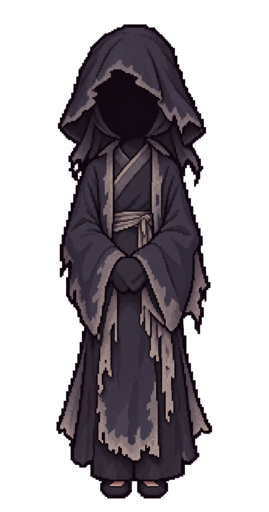
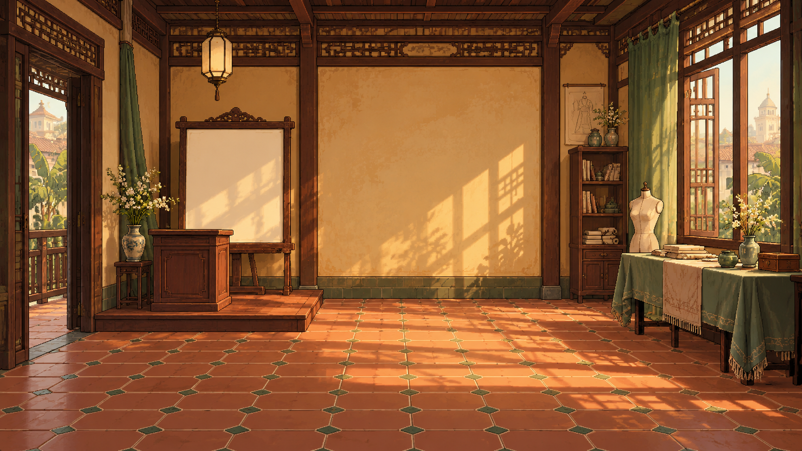

C2 — Gói duyệt v3
07/10/2026 · Nền A đã được người dùng chọn. Nhân vật mới bám tỷ lệ ảnh mẫu, chưa duyệt và chưa chuẩn hóa thành sprite runtime.
Duyệt hình dáng, tỷ lệ, trang phục trước. PNG gốc không phải atlas 176×416; alpha và anchor còn cần hậu kỳ. Không dùng hai bảng chibi v2 hoặc nhân vật vòng đầu cho build.
Trạng thái bàn giao · Manifest · Prompt · QA ảnh gốc
Ảnh mẫu và nhân vật mới
Chuẩn tỷ lệ do người dùng cung cấpLoan — thường nhật — chờ duyệt Loan — triển lãm — chờ duyệtCả Nghị — 52 tuổi — chờ duyệt
Loan — triển lãm — chờ duyệtCả Nghị — 52 tuổi — chờ duyệt
Ông Lệ — biểu tượng định kiến — chờ duyệtNgười nghe / ký giả — chờ duyệt Minh họa nhân vật trên nền A
Chỉ để đánh giá độ hòa hợp; chưa phải vị trí NPC, scale hoặc hotspot cuối.
Ba nền đã chọn
 S1 — gác vẽ — A đã chọn, đã đăng ký runtime
S1 — gác vẽ — A đã chọn, đã đăng ký runtime S2 — kho vải — A đã chọn, đã đăng ký runtime
S2 — kho vải — A đã chọn, đã đăng ký runtime
S3 — triển lãm — A đã chọn, đã đăng ký runtimeBản vẽ và đạo cụ tham khảo
Dùng bản vẽ liền để UI chia bốn dải; không dùng các dải gen riêng làm đáp án ghép. Sheet đạo cụ/két chưa phải lớp phủ căn khớp.